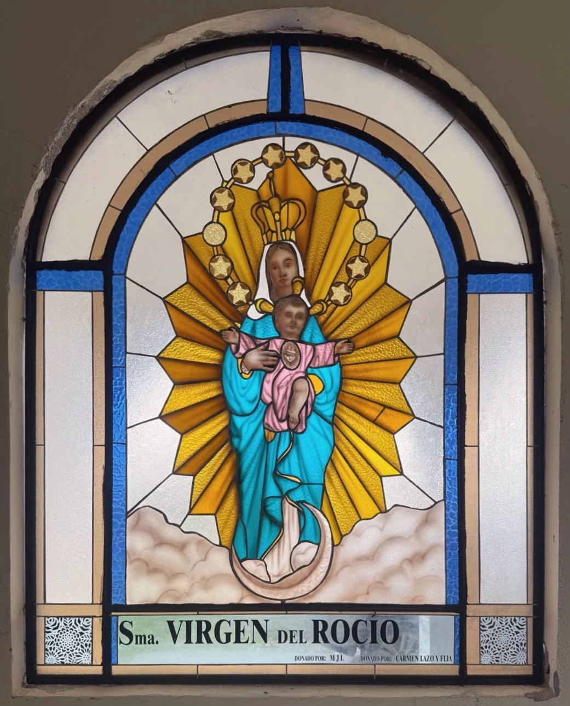

NUESTRO OFICIO / DISEÑO
Diseño
Cada obra comienza con una idea
En MAKI concebimos el diseño como un proceso creativo que integra arte, arquitectura, simbolismo y luz. Podemos reproducir e interpretar imágenes religiosas tradicionales, respetando su iconografía y significado, y desarrollar diseños originales, exclusivos e irrepetibles para cada proyecto. Estudiamos la composición, el color, los materiales y la viabilidad constructiva de cada propuesta.

NUESTRO TRABAJO
Nuestra manera de trabajar
Nuestra propuesta
En MAKI concebimos el diseño como un proceso creativo que integra arte, arquitectura, simbolismo y luz. Estudiamos las características del espacio, la iluminación natural y las necesidades de cada proyecto para desarrollar composiciones que dialoguen con su entorno.
Interpretación y creación
Nuestro taller tiene la capacidad de reproducir e interpretar imágenes religiosas tradicionales, respetando su iconografía y significado, así como crear diseños originales, exclusivos e irrepetibles, concebidos especialmente para cada encargo. No establecemos distinciones visuales entre ambas modalidades: cada obra forma parte de nuestra expresión artística.
Del boceto al diseño final
Definimos formas, colores, texturas, distribución de piezas y soluciones constructivas, hasta obtener una propuesta que equilibre la intención artística y la viabilidad técnica de fabricación.